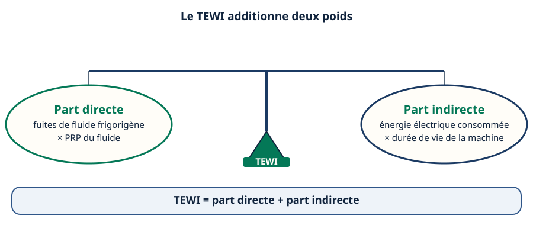
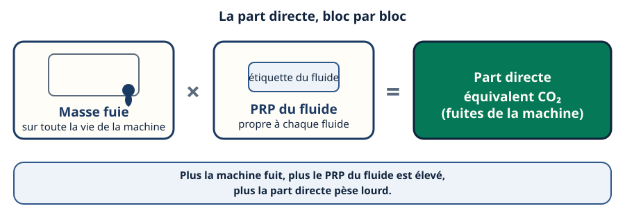
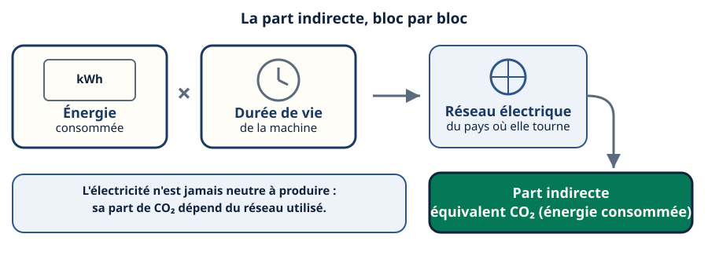
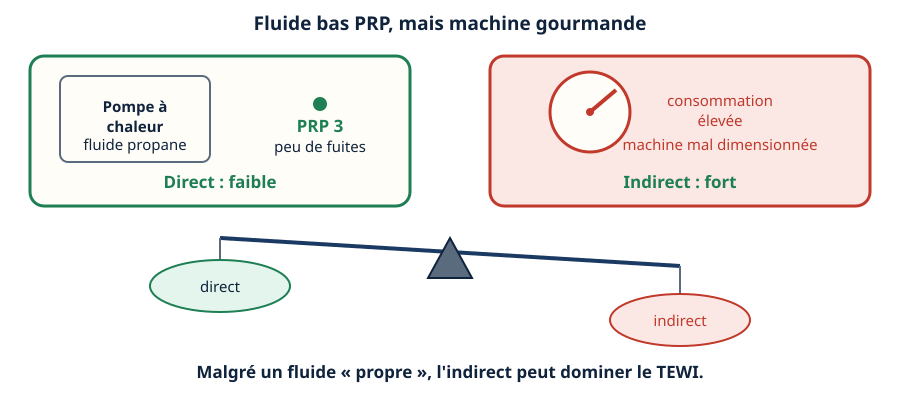
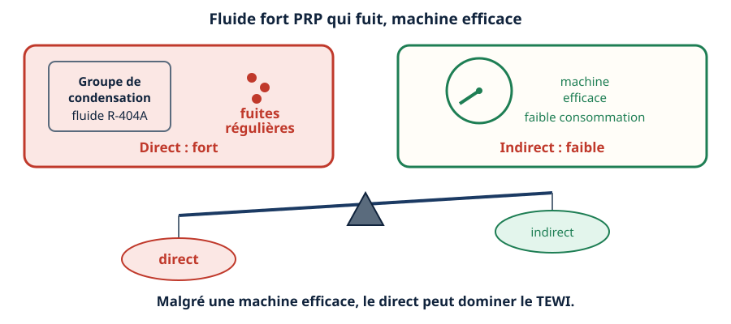
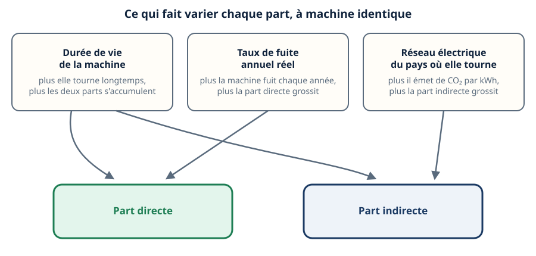
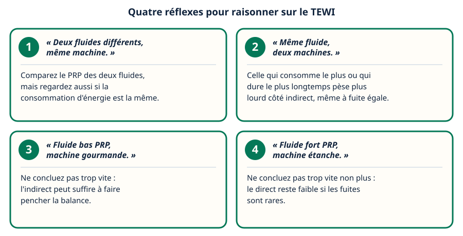
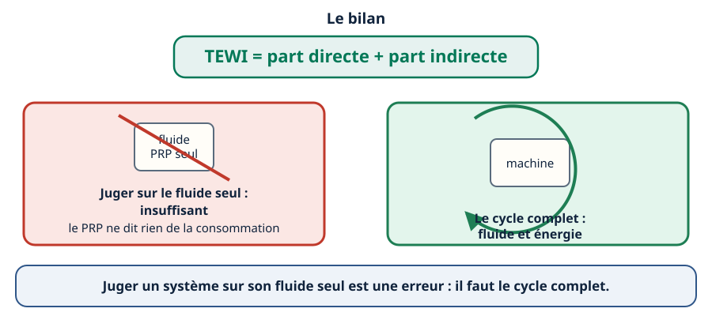

Mini-station commentée · 8 écrans et 4 questions · environ 10 minutes
Objectif
À la fin de la station, vous savez ce qu'est le TEWI, distinguer sa part directe (les fuites de fluide) et sa part indirecte (l'énergie consommée), repérer les deux pièges qui peuvent tromper un jugement rapide, et comprendre pourquoi juger un système sur son seul fluide est une erreur.
Chaque écran peut être expliqué à voix haute : le bouton « Écouter » commente ce que vous voyez. Rien n'est dit qui ne soit aussi écrit.
1 / 12
Écran 1 sur 8
Le TEWI : une balance à deux plateaux
Le TEWI (Total Equivalent Warming Impact) mesure le poids climatique complet d'une machine frigorifique, sur toute sa vie. Il additionne deux parts :
la part directe : les fuites de fluide frigorigène pendant la vie de la machine, converties en équivalent CO₂ grâce au PRP du fluide ;
la part indirecte : l'énergie électrique consommée par la machine pendant toute sa vie, elle aussi convertie en équivalent CO₂.
Il ne suffit pas de regarder un seul plateau. C'est la somme des deux qui donne le TEWI.

Deux plateaux, un seul pivot : le TEWI est la somme des deux.
Écran 2 sur 8
La part directe, en détail
La part directe se construit en deux temps :
on additionne toute la masse de fluide fuie pendant la vie de la machine ;
on la multiplie par le PRP du fluide utilisé.
Le PRP dépend du fluide : à titre d'exemple, le CO₂ (R-744) a un PRP de 1, le propane un PRP de 3, l'ammoniac un PRP de 0. À l'inverse, des fluides comme le R-410A ou le R-404A ont des PRP nettement plus élevés. À masse fuie égale, le résultat n'est donc pas du tout le même selon le fluide choisi.

Masse fuie multipliée par le PRP : c'est tout le mécanisme de la part directe.
Écran 3 sur 8
La part indirecte, en détail
La part indirecte se construit elle aussi en deux temps :
on additionne toute l'énergie électrique consommée par la machine pendant sa vie ;
on la convertit en équivalent CO₂ selon l'électricité utilisée.
L'électricité n'est jamais neutre à produire. Sa part de CO₂ dépend du réseau électrique sur lequel la machine tourne — un réseau n'émet pas la même chose qu'un autre. Une chambre froide, une PAC ou un groupe de condensation qui consomment beaucoup pèsent donc plus lourd sur cette part, quel que soit leur fluide.

Énergie consommée sur toute la vie, convertie selon le réseau électrique.
Écran 4 sur 8
Piège n°1 : la machine gourmande
Imaginez une PAC au propane (PRP 3, donc très bas). Elle fuit peu : sa part directe reste faible. Mais elle est mal dimensionnée et consomme beaucoup d'électricité sur toute sa vie.
Sa part indirecte peut alors dominer le TEWI, malgré un fluide « propre ». Choisir un bon fluide ne suffit pas si la machine consomme trop.

Un fluide bas PRP n'empêche pas une part indirecte lourde.
Écran 5 sur 8
Piège n°2 : la machine qui fuit
Le miroir du piège précédent. Imaginez un groupe de condensation au R-404A (PRP élevé), une machine par ailleurs efficace, qui consomme peu. Mais elle fuit régulièrement.
Sa part directe peut alors dominer le TEWI, malgré une machine efficace. Une bonne efficacité énergétique ne compense pas un fluide qui s'échappe.

Une machine économe en énergie n'empêche pas une part directe lourde.
Écran 6 sur 8
Ce qui fait varier chaque part
À machine identique, plusieurs éléments changent le résultat :
la durée de vie de la machine — plus elle tourne longtemps, plus les deux parts ont le temps de s'accumuler ;
le taux de fuite annuel réel — plus la machine fuit chaque année, plus la part directe grossit ;
le réseau électrique du pays où elle tourne — plus il émet de CO₂ par kilowattheure consommé, plus la part indirecte grossit.
Aucun de ces éléments ne se lit sur la seule étiquette du fluide.

Trois leviers, mais pas les mêmes effets selon la part regardée.
Écran 7 sur 8
Le raisonnement : quatre réflexes de terrain
« Deux fluides différents, même machine. » → Comparez le PRP des deux fluides, mais regardez aussi si la consommation d'énergie est la même.
« Même fluide, deux machines. » → Celle qui consomme le plus ou qui dure le plus longtemps pèse plus lourd côté indirect, même à fuite égale.
« Fluide bas PRP, machine gourmande. » → Ne concluez pas trop vite : l'indirect peut suffire à faire pencher la balance.
« Fluide fort PRP, machine étanche. » → Ne concluez pas trop vite non plus : le direct reste faible si les fuites sont rares.

Dans les quatre cas, la même règle : ne jamais juger un seul côté de la balance.
Écran 8 sur 8
Bilan : le cycle complet, jamais le seul fluide
Le TEWI additionne la part directe (fuites × PRP) et la part indirecte (énergie × durée de vie).
Une machine étanche mais gourmande peut peser plus lourd qu'une machine qui fuit un peu mais consomme peu.
La durée de vie, le taux de fuite réel et le réseau électrique font varier le résultat — rien de tout cela ne se lit sur l'étiquette du fluide.
Juger un système sur son seul fluide est une erreur : il faut regarder le cycle complet.
Le réflexe : TEWI = part directe + part indirecte, jamais l'une sans l'autre.

Le fluide seul ne dit rien du TEWI : c'est le cycle complet qui compte.
Question 1 sur 4
Qu'est-ce que le TEWI ?
Rappel de l'écran 1 — deux plateaux, un seul pivot.
Question 2 sur 4
Fluide très bas PRP, mais forte consommation sur toute la vie. Que peut-il se passer ?
Rappel de l'écran 4 — la machine gourmande.
Question 3 sur 4
Qu'est-ce qui fait varier la part indirecte du TEWI, à machine identique ?
Rappel de l'écran 6 — trois leviers, pas les mêmes effets.
Question 4 sur 4
Pourquoi comparer deux machines seulement sur le PRP de leur fluide est-il insuffisant ?
Rappel de l'écran 8 — le fluide seul ne suffit pas.
Les correspondances de la station
La RE2020 (sous-ligne Thermique) — l'impact carbone d'un bâtiment sur son cycle de vie, le même principe étendu au-delà de la seule machine.
NF EN 378 (même sous-ligne) — ce que la classe du fluide impose en plus, indépendamment de son PRP.
Ces deux stations sont en préparation sur le plan du réseau : aucun lien n'est encore ouvert.